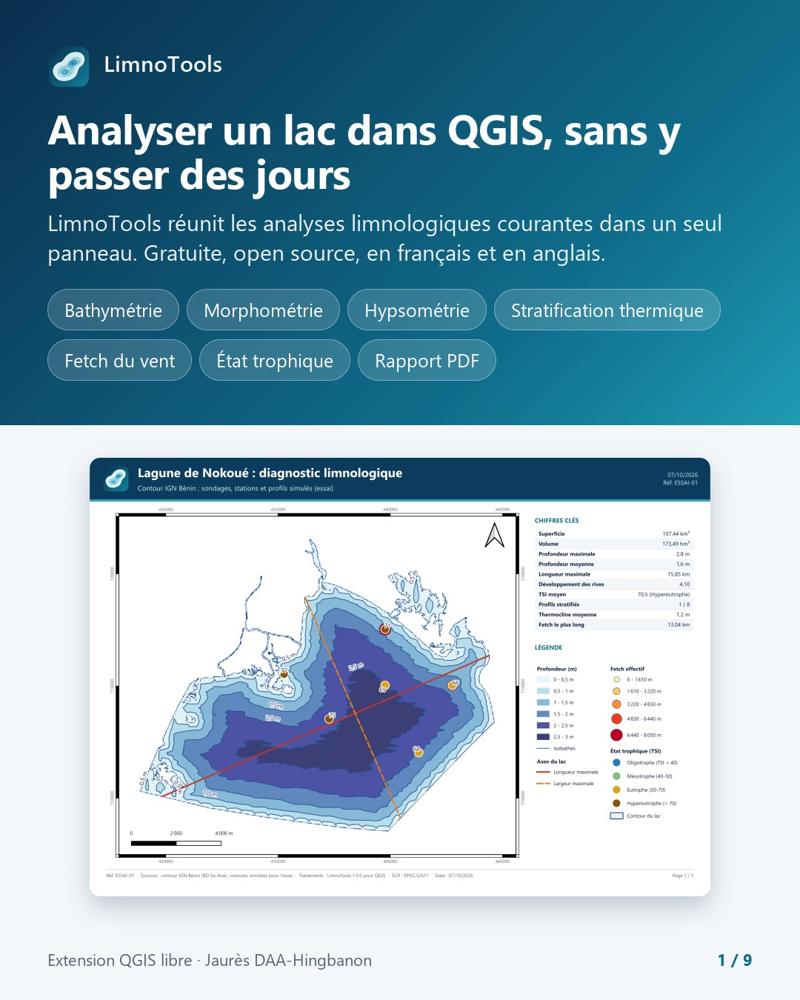
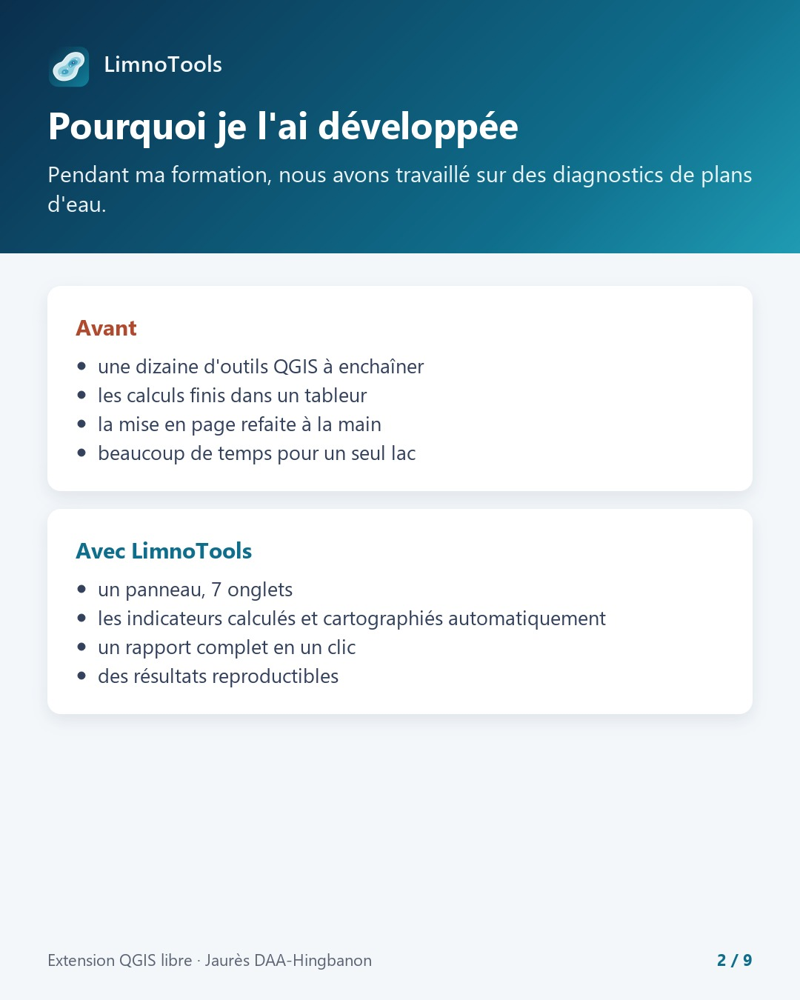
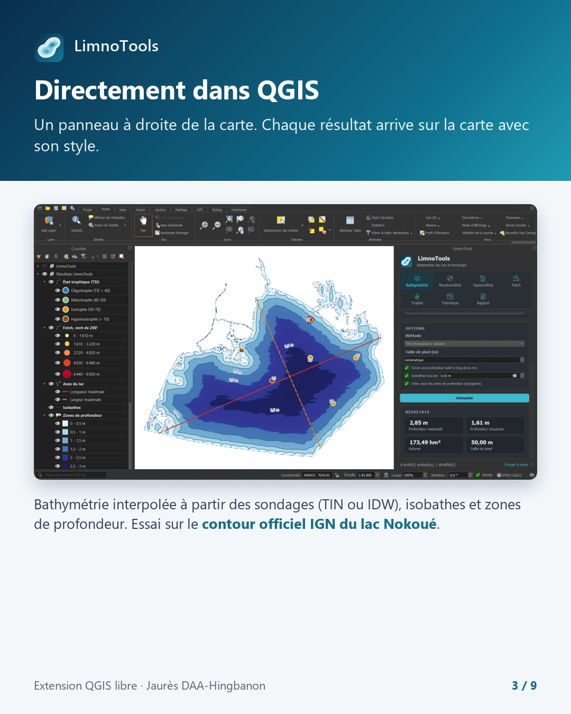
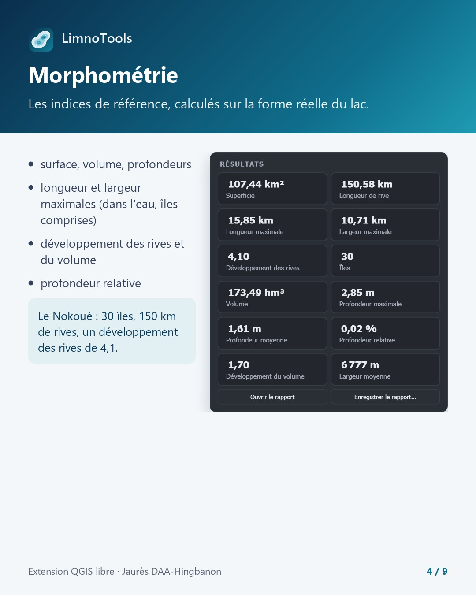
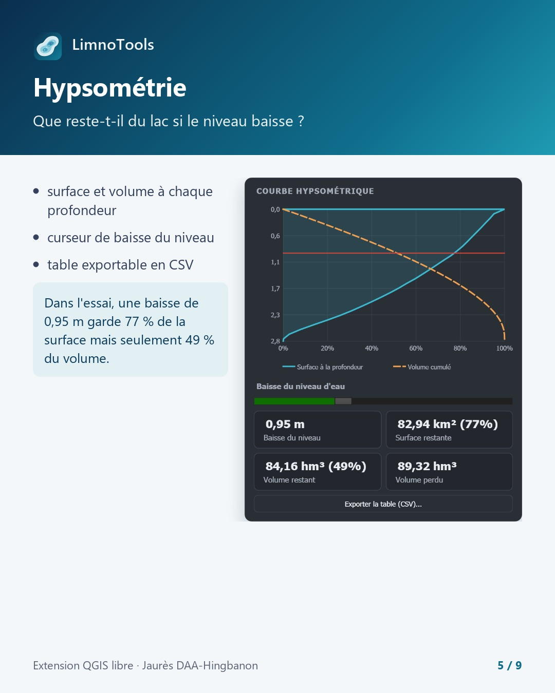
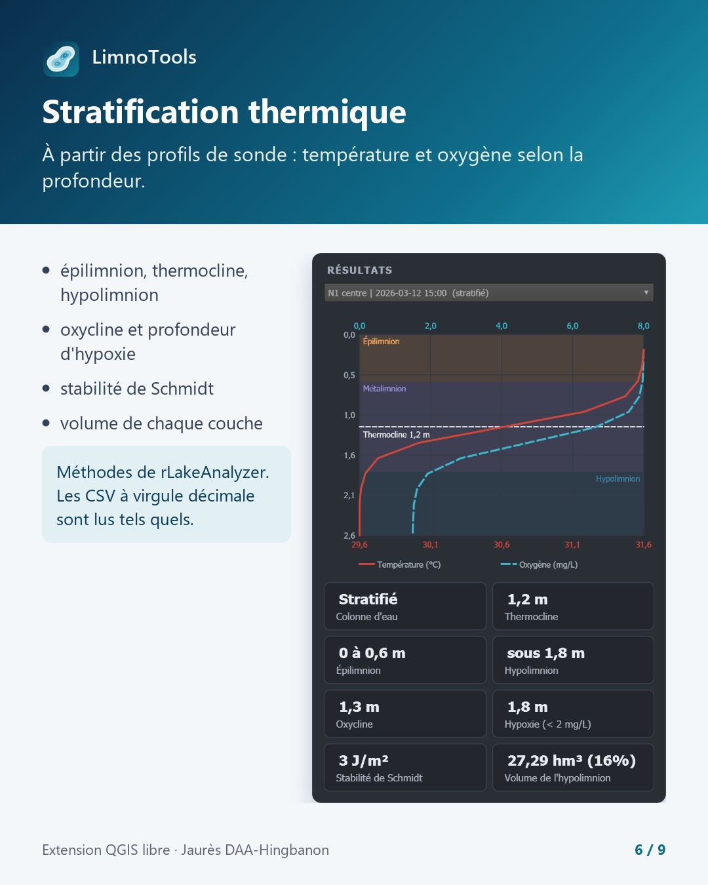
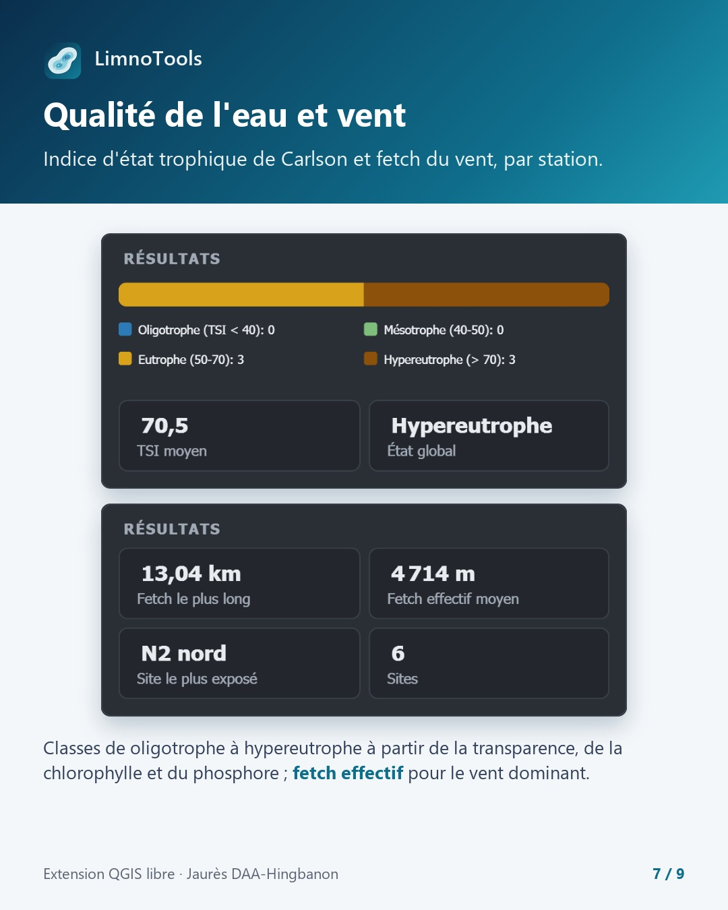
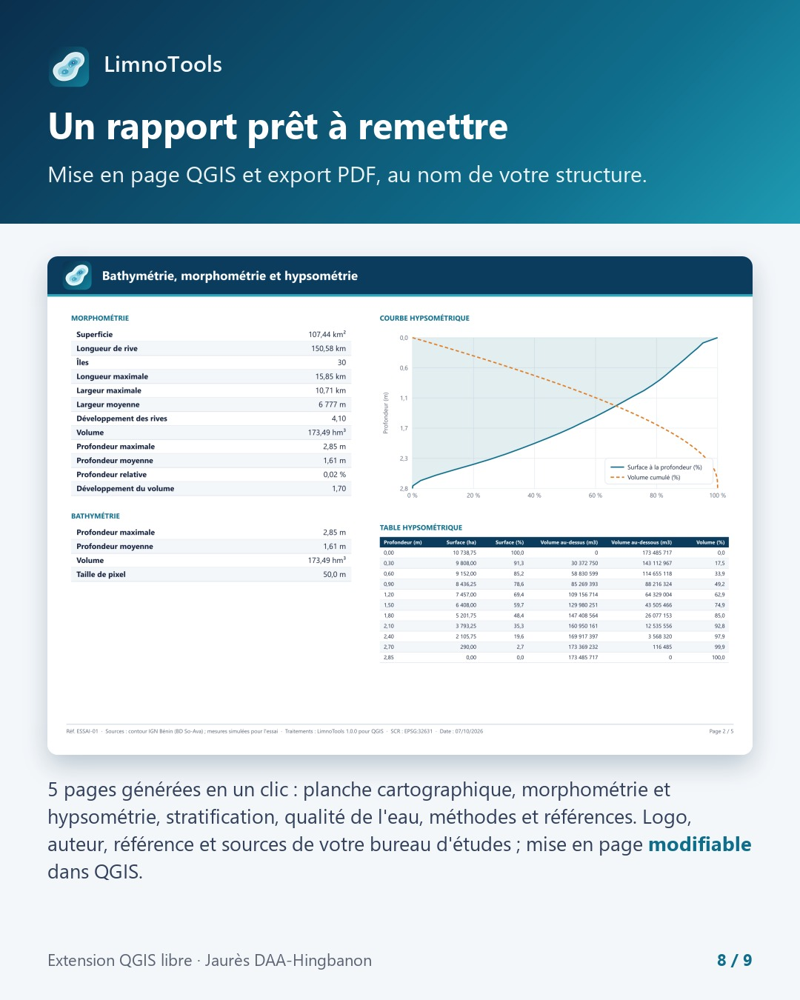

Développement d'outils SIG · Limnologie · Python · PyQGIS · Projet personnel, 2026
LimnoTools
Une extension QGIS qui transforme les données de terrain sur les lacs en cartes et en indicateurs limnologiques
Contexte et objectif
Pendant ma formation en géomatique et limnologie, nous avons travaillé sur des diagnostics de plans d'eau. Calculer la morphométrie d'un lac, tracer sa courbe hypsométrique ou diagnostiquer sa stratification thermique obligeait à enchaîner une dizaine d'outils QGIS, à terminer les calculs dans un tableur et à refaire la mise en page à la main, pour beaucoup de temps passé sur un seul lac. LimnoTools réunit ces analyses dans un seul panneau : à partir de sondages de profondeur, de profils de sonde multiparamètre et de mesures de qualité de l'eau, l'extension produit les cartes et les indicateurs de référence d'une étude de lac, de retenue ou de lagune, jusqu'au rapport final. Elle est gratuite, open source, en français et en anglais.


Démarche et outils
L'extension est développée en Python avec PyQGIS et ne dépend que de GDAL et de NumPy, déjà fournis avec QGIS, ce qui évite toute installation supplémentaire. Chaque traitement est un algorithme Processing, utilisable dans la boîte à outils, le modeleur graphique, le traitement par lot ou un script Python, et un panneau placé à droite de la carte les rassemble dans une interface guidée : chaque résultat arrive sur la carte avec son style. Sept outils couvrent la chaîne d'étude :
- Interpolation de la bathymétrie (TIN ou IDW) à partir des sondages, avec la rive forcée à 0 m, pour obtenir un raster de profondeur, les profondeurs maximale et moyenne et le volume.
- Isobathes et zones de profondeur, étiquetées et graduées.
- Morphométrie lacustre : superficie, longueur de rive, îles, longueur et largeur maximales, développement des rives, volume, profondeur relative et développement du volume.
- Courbe hypsométrique avec table de marnage et simulateur de baisse du niveau.
- Stratification thermique à partir des profils de sonde : thermocline, limites de l'épilimnion et de l'hypolimnion, oxycline, profondeur d'hypoxie, stabilité de Schmidt et volume de chaque couche.
- Fetch du vent : distance d'eau libre par direction et fetch effectif pour le vent dominant.
- Indice d'état trophique de Carlson à partir du Secchi, de la chlorophylle a et du phosphore total.
Les formules suivent les références du domaine : Hutchinson, Wetzel, Håkanson, Carlson, le Shore Protection Manual et rLakeAnalyzer pour la stratification.
Résultats sur un cas réel : la lagune de Nokoué
Pour les captures ci-dessous, l'extension a été testée sur le contour officiel de la lagune de Nokoué au Bénin (IGN, 18 400 sommets, 30 îles), avec des sondages, des stations et des profils de sonde simulés pour l'essai. Les valeurs de géométrie (superficie, rive, longueurs) viennent donc du vrai contour, alors que les profondeurs, les volumes et les indicateurs de qualité de l'eau sont ceux de données simulées : il s'agit d'une démonstration des outils, pas d'un diagnostic du lac.
Côté bathymétrie, les sondages sont interpolés en un raster de profondeur, avec isobathes et zones de profondeur, directement dans QGIS. La morphométrie donne sur ce contour une superficie de 107,44 km², 150,58 km de rives, une longueur maximale de 15,85 km et un développement des rives de 4,10, qui traduit un contour très découpé.


La courbe hypsométrique donne la surface et le volume à chaque profondeur, avec un curseur de baisse du niveau et une table exportable en CSV. Dans l'essai, une baisse de 0,95 m laisse 77 % de la surface mais seulement 49 % du volume, ce qui montre à quel point un faible marnage peut vider un lac peu profond. La stratification thermique, calculée à partir des profils de sonde, repère la thermocline, l'oxycline et la profondeur d'hypoxie : sur la station de démonstration, la colonne d'eau est stratifiée, avec une thermocline à 1,2 m et un hypolimnion qui représente 16 % du volume.


L'indice d'état trophique de Carlson classe chaque station de l'oligotrophe à l'hypereutrophe à partir de la transparence, de la chlorophylle et du phosphore : sur les 6 stations simulées, 3 sont eutrophes et 3 hypereutrophes, pour un TSI moyen de 70,5. Le fetch du vent complète le diagnostic en identifiant le site le plus exposé, avec un fetch le plus long de 13,04 km et un fetch effectif moyen de 4 714 m.
L'onglet Rapport rassemble ensuite toutes les analyses lancées dans une mise en page QGIS de 5 pages : planche cartographique, morphométrie et hypsométrie, stratification, qualité de l'eau, méthodes et références. Le nom du bureau d'études, l'auteur, le logo, la référence et les sources se saisissent une seule fois et sont réutilisés dans chaque rapport, dont la mise en page reste modifiable dans QGIS et s'exporte en PDF géoréférencé ou en rapport HTML complet.


Validation
Les algorithmes sont validés sur des cas analytiques : pour un lac conique de rayon R et de profondeur H, le volume calculé correspond à πR²H/3 à moins de 1 %. Une suite de tests de robustesse a aussi été exécutée sur des contours officiels et des données imparfaites : les lacs Nokoué et Ahémé au Bénin (IGN), 316 plans d'eau de la BD TOPO, et des fichiers de tableur avec virgule décimale, valeurs manquantes et profondeurs en double. L'extension est compatible de QGIS 3.28 LTR à QGIS 4.
Statut et téléchargement
LimnoTools 1.0.0 est publié sous licence GNU GPL v2 ou ultérieure. L'extension inclut un jeu de démonstration entièrement synthétique, chargeable en un clic (un lac avec une île, 970 sondages, 7 stations et des profils de sonde sur deux campagnes) ; les contours réels ne sont pas distribués avec elle. Le code source, l'historique des versions et le suivi des problèmes sont disponibles sur GitHub, et l'archive ci-dessous s'installe directement dans QGIS.
Télécharger l'extension (.zip) Voir le code sur GitHubInstallation dans QGIS
- Dans QGIS, ouvrir le menu Extensions puis Installer/Gérer les extensions.
- Aller sur l'onglet Installer depuis un ZIP.
- Cliquer sur le bouton « … » et sélectionner le fichier
limnotools-1.0.0.ziptéléchargé. - Cliquer sur Installer l'extension.
- Cliquer sur le bouton LimnoTools de la barre d'outils, puis sur Charger la démo pour parcourir les onglets dans l'ordre.
Les données doivent être dans un système de coordonnées projeté en mètres (Lambert 93, UTM...). Les profondeurs peuvent être positives ou stockées en altitudes négatives.